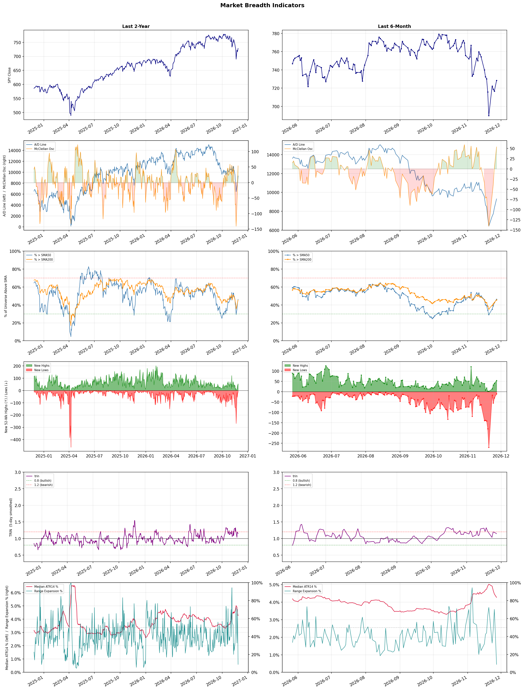

A daily market breadth and sector rotation report for active investors
| Item | Read |
|---|---|
| Regime | Neutral |
| Risk posture | Cautious |
| Universe | 1,310 stocks tracked · 54 new 52-week highs · 30 active swing setups |
| Breadth | only 46.2% of tracked stocks are above SMA50, new highs exceed new lows (54 vs 10) |
| Leadership | Advertising Agencies, Insurance Brokers, and Apparel Manufacturing |
| Weakest groups | Other Industrial Metals & Mining, Uranium, and Electrical Equipment & Parts |
Use this report to prioritize research and chart review; validate entries, stops, liquidity, earnings, and risk before acting.
| Item | Read |
|---|---|
| Primary read | Neutral regime with Cautious risk posture. |
| Research queue | STGW, APP, OMC, EVC, MGNI |
| Leadership focus | Advertising Agencies, Insurance Brokers, and Apparel Manufacturing |
| Caution list | Other Industrial Metals & Mining, Uranium, and Electrical Equipment & Parts |
| Review prompt | Check extension risk, chart location, fundamentals, valuation, and earnings before using any research row. |
| Item | Read |
|---|---|
| Primary read | 1 active risk warnings; use screen output as watchlist input only. |
| Bullish screens | OMC, VFC, COTY, ORI, ASO |
| Bearish screens | GT |
| Alerts / levels | Automated trigger, stop, ATR, liquidity, reward/risk, and event-risk levels are pending future enrichment. |
| Review prompt | Open the linked chart, define trigger and invalidation, then check liquidity and event risk independently. |
Risk Posture: Cautious — screen backdrop is selective; prioritize research in top-ranked groups
Metric context: McClellan below -50 = elevated selling pressure; below -100 = washout territory. Range Expansion = share of stocks with daily range above their 20-day average. Signal Density = share of tracked names appearing in signal screens.
| Breadth Date | % > SMA50 | % > SMA200 | New Highs | New Lows | McClellan | Median Range | Avg Range | Median ATR14 | Range Expansion | Signal Density |
|---|---|---|---|---|---|---|---|---|---|---|
| 2026-11-27 | 46.2% | 45.5% | 54 | 10 | 53.8 | 2.7% | 3.3% | 4.3% | 8.8% | 1.1% |

Prior comparison date: November 25, 2026
| Metric | Prior | Current | Change |
|---|---|---|---|
| Regime | Defensive | Neutral | changed |
| Risk Posture | Defensive | Cautious | changed |
| % > SMA50 | 42.4% | 46.2% | +3.8 pts |
| % > SMA200 | 42.8% | 45.5% | +2.7 pts |
| New Highs | 41 | 54 | +13 |
| New Lows | 29 | 10 | +19 |
Top-10 industries entering: none. Top-10 industries leaving: none. New multi-signal long setups: BBIO, COTY, CTAS, SPG, TXNM, VTR, ZBH. New multi-signal short setups: GT.
| Status | Tickers | Read |
|---|---|---|
| Added | AKR, ARHS, BBIO, BBY, BRX, BWIN, CLX, COTY | New technical screen matches vs prior report. |
| Removed | AHR, AJG, BDX, BULL, CCEP, DUK, GKOS, IBN | No longer present in today's technical screen matches. |
| Still Active | ADP, ASO, DIS, EXLS, OMC, ORI, TAK, VFC | Appeared in both current and prior reports. |
| Promoted | none | Model Screen Score improved by at least 15 points. |
| Downgraded | none | Model Screen Score declined by at least 15 points. |
| Direction | Industry | ETF | Prior Rank | Current Rank | Days | Rank Change |
|---|---|---|---|---|---|---|
| Rose | Airlines | N/A | 77 | 11 | 42 | +66 |
| Rose | Resorts & Casinos | N/A | 84 | 24 | 35 | +60 |
| Rose | Advertising Agencies | N/A | 50 | 1 | 28 | +49 |
| Rose | REIT - Retail | N/A | 51 | 10 | 42 | +41 |
| Rose | Telecom Services | N/A | 70 | 32 | 28 | +38 |
Bull: The Airlines sector is experiencing rising relative strength primarily due to a robust recovery in travel demand post-pandemic, as highlighted by optimistic outlooks from analysts like Zacks and The Motley Fool, which point to strong investment opportunities through 2026. Additionally, despite some short-term volatility, such as American Airlines' recent drop, the overall trend remains positive, with United Airlines' stock showing resilience and outperforming the broader industrial sector, indicating investor confidence in the long-term profitability of airline stocks.
Bear: While the airline sector may currently exhibit rising relative strength, this trend is precarious and largely driven by short-term recovery in travel demand, which could easily reverse due to economic uncertainties, rising fuel costs, or geopolitical tensions. Furthermore, the recent disappointing earnings from United Airlines, coupled with American Airlines' significant stock drop, suggest underlying vulnerabilities in the sector that could undermine long-term profitability and investor confidence, making it a risky investment at this stage.
Verdict: The airline industry's rising relative strength is primarily driven by a robust recovery in travel demand post-pandemic, supported by positive analyst outlooks that suggest strong investment opportunities through 2026. However, key risks remain, including economic uncertainties, rising fuel costs, and geopolitical tensions, which could reverse this momentum and impact long-term profitability, making it crucial for investors to closely monitor these factors before committing capital.
Sources: Google News
Bull: The Resorts & Casinos industry is experiencing a bullish trend due to a resurgence in consumer discretionary spending, particularly in the wake of a recovering global economy, as highlighted by positive analyses of Wynn Resorts and its resilient hotel/casino portfolio. Additionally, the focus on specific winners like Red Rock Resorts and the overall favorable outlook for casino operator stocks in Q3 suggests increasing investor confidence and demand, driving relative strength in the sector compared to others. This momentum is further supported by the broader trend of rising stock prices and positive news coverage, indicating a robust recovery and growth potential in the industry.
Bear: While the Resorts & Casinos industry may currently exhibit a rising relative-strength trend, this bullish sentiment overlooks several critical headwinds. Consumer discretionary spending is vulnerable to economic fluctuations, and potential recessionary pressures could dampen consumer confidence and spending on leisure activities. Furthermore, rising interest rates and inflation could strain disposable incomes, leading to a decline in visitation and spending at casinos, which would negatively impact revenue and profitability for operators like Red Rock Resorts and Wynn Resorts.
Verdict: The Resorts & Casinos industry is experiencing a bullish trend driven by a rebound in consumer discretionary spending and increasing investor confidence, particularly in leading operators like Wynn Resorts and Red Rock Resorts. However, key risks remain, including potential economic downturns that could undermine consumer confidence and rising interest rates, which may constrain disposable incomes and negatively impact visitation and revenue growth. Investors should monitor economic indicators closely to assess the sustainability of this upward momentum.
Sources: Google News
Bull: The Advertising Agencies sector is experiencing rising relative strength primarily due to the increasing integration of artificial intelligence (AI) in marketing strategies, as highlighted by multiple sources like Morningstar and The Motley Fool. This technological advancement is driving efficiency and effectiveness in ad campaigns, positioning companies like Publicis favorably in a competitive landscape. Additionally, the positive outlook on advertising technology investments suggests a robust growth trajectory for the sector, attracting investor interest and confidence.
Bear: While the integration of AI in marketing strategies may seem promising, it also raises significant concerns about over-reliance on technology, which could lead to diminished creativity and effectiveness in advertising campaigns. Moreover, the competitive landscape is becoming increasingly saturated, with many players vying for market share, potentially leading to price wars and reduced profit margins. Additionally, economic uncertainties and shifts in consumer behavior could dampen advertising budgets, undermining the optimistic growth projections for the sector.
Verdict: The advertising agencies sector is likely experiencing rising relative strength due to the transformative impact of AI on marketing strategies, enhancing campaign efficiency and effectiveness, which attracts investor interest. However, a key risk lies in the potential over-reliance on technology, which could stifle creativity and lead to price wars in a saturated market, especially amid economic uncertainties that may constrain advertising budgets. Investors should closely monitor these dynamics to gauge the sustainability of growth in this sector.
Sources: Google News
Bull: The rising relative strength of the Retail REIT sector can be attributed to a robust outlook for retail real estate, as highlighted by positive analyses from sources like Morningstar and Zacks, which emphasize strong fundamentals for key players like Simon Property and Realty Income. Additionally, the growing interest from income investors, as noted in the Steady article on high-yielding retail REITs, suggests a shift towards stable, income-generating assets amidst a fluctuating economic environment, further bolstering confidence in the sector's resilience and potential for growth.
Bear: While the rising relative strength of Retail REITs may seem promising, it overlooks critical headwinds such as the ongoing shift towards e-commerce, which continues to erode foot traffic in physical retail spaces. Additionally, rising interest rates and inflation could pressure both consumer spending and the cost of capital for these REITs, potentially leading to reduced rental income and increased operational costs, undermining the perceived stability and growth potential highlighted by bullish analysts.
Verdict: The Retail REIT sector is experiencing rising relative strength due to strong fundamentals and increasing interest from income-focused investors seeking stability in a volatile economic environment, as evidenced by positive analyses from firms like Morningstar and Zacks. However, key risks remain, particularly the ongoing shift towards e-commerce, which threatens foot traffic and could negatively impact rental income, alongside rising interest rates and inflation that may pressure consumer spending and operational costs. Investors should closely monitor these headwinds while considering the potential for growth in well-positioned REITs.
Sources: Google News
Bull: The Telecom Services sector is experiencing a rise in relative strength primarily due to increasing investor interest in communication stocks, as highlighted by articles from The Motley Fool and Kiplinger, which identify top picks for 2026 and emphasize the sector's potential for growth. Additionally, the recent Q3 teardown from TradingView indicates that companies like Viasat are performing well, suggesting a positive outlook for telecom services amidst competitive pressures, including those from new entrants like SpaceX, which may drive innovation and investment in the sector. Overall, the combination of strong stock performance and a favorable long-term outlook positions Telecom Services as an attractive investment opportunity.
Bear: While the relative strength trend in the Telecom Services sector may appear positive, the underlying fundamentals present significant headwinds. Increased competition from new entrants like SpaceX could lead to pricing pressures and reduced margins for established players, while the Q3 teardown highlights vulnerabilities in companies like Viasat, suggesting that not all firms are thriving. Moreover, the sector's reliance on high capital expenditures and regulatory challenges may hinder long-term growth, making it a less attractive investment opportunity than the bullish narrative suggests.
Verdict: The Telecom Services sector's rising relative strength is primarily driven by heightened investor interest and strong stock performance, particularly in companies like Viasat, which signals optimism for growth amidst increasing competition. However, the key risk lies in potential pricing pressures and reduced margins due to new entrants like SpaceX, coupled with the sector's heavy reliance on capital expenditures and regulatory challenges that could impede long-term profitability. Investors should closely monitor competitive dynamics and regulatory developments before making investment decisions in this space.
Sources: Google News
| Direction | Industry | ETF | Prior Rank | Current Rank | Days | Rank Change |
|---|---|---|---|---|---|---|
| Fell | Oil & Gas Refining & Marketing | CRAK | 1 | 66 | 42 | -65 |
| Fell | Oil & Gas Integrated | XLE | 2 | 65 | 42 | -63 |
| Fell | Oil & Gas E&P | XOP | 1 | 64 | 28 | -63 |
| Fell | Steel | SLX | 17 | 63 | 35 | -46 |
| Fell | Copper | COPX | 39 | 84 | 42 | -45 |
Bear: While the bull analyst points to recent earnings and bullish projections as indicators of strength, the significant rise in oil-refinery stocks—up 150% this year—could signal an overextension that invites a market correction. Additionally, the industry's reliance on volatile crude oil prices poses a substantial risk, particularly as geopolitical tensions and climate policies increasingly threaten supply stability and profitability. The sustainability concerns and regulatory pressures mentioned are not just peripheral issues; they represent fundamental challenges that could undermine the long-term viability of the sector, leading to a potential downturn.
Bull: The Oil & Gas Refining & Marketing sector is experiencing a relative strength decline primarily due to a combination of rising crude oil prices and potential market corrections following a significant rally, as highlighted by the MarketWatch article noting a 150% rise in U.S. oil-refinery stocks this year. Additionally, while there are positive earnings reports and bullish projections for 2026, the overall industry sentiment may be tempered by concerns over sustainability and regulatory pressures, as indicated by the broader discussions in the recent headlines.
Verdict: The Oil & Gas Refining & Marketing sector is likely experiencing a decline due to the unsustainable rise in oil-refinery stocks, which have surged 150% this year, indicating a potential market correction. Key risks include the industry's vulnerability to volatile crude oil prices and increasing regulatory pressures related to sustainability, which could significantly impact profitability and long-term viability. Investors should closely monitor geopolitical developments and climate policies that may exacerbate these challenges.
Sources: Google News
Bear: While the bull analyst highlights positive developments and increasing fair value estimates for major oil stocks, the persistent decline in relative strength suggests deeper underlying issues. Concerns over sustainability and the global shift towards renewable energy sources are not just sentiment-driven; they represent a fundamental risk to the long-term viability of the oil and gas sector. Additionally, rising oil prices may not be sustainable in the face of potential economic slowdowns, regulatory pressures, and a growing emphasis on energy transition, which could further erode investor confidence in traditional fossil fuel investments.
Bull: The Oil & Gas Integrated sector is experiencing a relative strength decline primarily due to broader market trends favoring other industries, despite positive developments within the sector itself. The headlines indicate that while major oil stocks are benefiting from increasing fair value estimates driven by higher oil prices and favorable industry trends, these gains may not yet be translating into relative strength against other sectors, possibly due to investor sentiment shifting towards growth-oriented sectors or concerns over sustainability and energy transition impacting traditional fossil fuel investments.
Verdict: The Oil & Gas Integrated sector's decline in relative strength is primarily driven by a shift in investor sentiment towards growth sectors and increasing concerns over sustainability and the energy transition, which pose fundamental risks to the long-term viability of traditional fossil fuel investments. Key risks include potential regulatory pressures and economic slowdowns that could undermine rising oil prices, further eroding investor confidence. Investors should closely monitor these trends and consider diversifying into renewable energy or growth-oriented sectors to mitigate exposure to the declining oil and gas landscape.
Sources: Google News
Bear: While the bull analyst highlights broader market shifts and long-term optimism, the declining relative strength trend in the Oil & Gas E&P sector raises significant concerns about the sustainability of any recovery. The emphasis on "strong buy" ratings for large-cap stocks in other industries indicates a potential rotation away from energy investments, suggesting that investors may prioritize growth and innovation over traditional sectors like oil and gas, which are also facing headwinds from increasing regulatory pressures and a global shift towards renewable energy sources. Furthermore, the ongoing volatility in oil prices, exacerbated by geopolitical tensions and potential recessions, could lead to further instability in the sector, undermining the bullish sentiment.
Bull: The Oil & Gas E&P sector is experiencing a decline in relative strength primarily due to broader market shifts favoring growth sectors and concerns over oil price volatility, which can be inferred from the emphasis on "strong buy" ratings for large-cap stocks in other industries, as highlighted by TradingView. Additionally, while the headlines from US News Money and The Motley Fool suggest optimism for the sector's long-term prospects, there may be short-term pressures from fluctuating demand and geopolitical tensions that are keeping investor sentiment subdued in the near term.
Verdict: The Oil & Gas E&P sector's decline is fundamentally driven by a shift in investor preference towards growth sectors and increasing regulatory pressures, alongside heightened volatility in oil prices due to geopolitical tensions. The key risk highlighted by the bear case is the potential for sustained instability in the sector, as ongoing demand fluctuations and a global pivot towards renewable energy could further undermine recovery efforts. Investors should closely monitor these trends and consider reallocating investments to more resilient sectors or diversifying into renewables to mitigate exposure to oil and gas volatility.
Sources: Google News
Bear: While the bull analyst points to broader sector weaknesses and specific company concerns, it is crucial to recognize that the steel industry is facing significant headwinds from rising input costs, particularly energy and raw materials, which could further squeeze margins and profitability. Additionally, the rebound in steel stocks mentioned in recent headlines may be more of a short-term reaction rather than a sustainable recovery, as underlying demand remains uncertain due to potential economic slowdowns and increasing competition from alternative materials, casting doubt on the long-term viability of the sector.
Bull: The steel industry is currently experiencing a decline in relative strength primarily due to broader sector weaknesses and specific company concerns, as highlighted by the negative performance of Worthington Steel and jitters surrounding the Kloeckner deal. Additionally, while some headlines indicate a rebound in steel stocks, the overall sentiment remains cautious, influenced by macroeconomic factors such as fluctuating demand and potential overcapacity in the market, which are affecting investor confidence and leading to a relative underperformance compared to other industries.
Verdict: The steel industry's decline is primarily driven by broader economic uncertainties and specific company challenges, such as Worthington Steel's poor performance and concerns surrounding the Kloeckner deal. The key risk highlighted by the bear thesis is the rising input costs, particularly for energy and raw materials, which threaten to further compress margins and profitability amid uncertain demand and increasing competition from alternative materials. Investors should remain cautious and closely monitor macroeconomic indicators and input cost trends before making any investment decisions in the steel sector.
Sources: Google News
Bear: While the bull analyst attributes the decline in copper's relative strength primarily to tariff uncertainties, it's crucial to recognize that the broader macroeconomic environment is increasingly unfavorable for copper demand. With concerns over a potential global recession, slowing industrial activity, and rising interest rates, the outlook for copper consumption—particularly in construction and manufacturing—remains bleak. Furthermore, the recent headlines indicate a lack of confidence in copper stocks, with significant sell-offs suggesting that investors are not merely reacting to tariff news but are also anticipating a prolonged downturn in demand.
Bull: Copper's recent decline in relative strength can be attributed to investor uncertainty surrounding tariffs, as highlighted by the Yahoo Finance article detailing significant drops in key copper stocks like Freeport-McMoRan and Teck Resources. This uncertainty may be exacerbated by broader market trends and concerns over global economic growth, which are reflected in the mixed sentiment from various investment analyses, including those from The Motley Fool and Seeking Alpha, suggesting that while there are promising long-term prospects for copper, short-term volatility is impacting its performance relative to other industries.
Verdict: The recent decline in the copper industry is primarily driven by heightened investor concerns over a potential global recession, which is negatively impacting demand in key sectors like construction and manufacturing. While tariff uncertainties contribute to short-term volatility, the bear case highlights a broader macroeconomic environment characterized by slowing industrial activity and rising interest rates, posing a significant risk to copper consumption. Investors should closely monitor economic indicators and adjust their positions accordingly, as a prolonged downturn in demand could lead to further declines in copper prices.
Sources: Google News
| Industry | Rank | ETF | 7d | 14d | 28d | 42d | Chg 42d | Size | 20D | 60D | Composite | Active Setups |
|---|---|---|---|---|---|---|---|---|---|---|---|---|
| Advertising Agencies | 1 | N/A | 2 | 1 | 50 | 35 | +34 | 7 | 23.3% | 12.6% | 0.956 | 0 |
| Insurance Brokers | 2 | N/A | 1 | 10 | 7 | 12 | +10 | 6 | 7.7% | 8.0% | 0.947 | 0 |
| Apparel Manufacturing | 3 | N/A | 9 | 2 | 4 | 8 | +5 | 6 | 7.4% | 29.9% | 0.920 | 0 |
| Discount Stores | 4 | XRT | 3 | 7 | 9 | 4 | 0 | 7 | 7.4% | 15.1% | 0.897 | 0 |
| Household & Personal Products | 5 | XLP | 13 | 5 | 6 | 3 | -2 | 11 | 6.0% | 11.7% | 0.894 | 0 |
| Restaurants | 6 | N/A | 4 | 12 | 16 | 11 | +5 | 16 | 5.7% | 10.7% | 0.854 | 0 |
| Insurance - Property & Casualty | 7 | KIE | 8 | 14 | 17 | 18 | +11 | 8 | 3.2% | 6.5% | 0.833 | 1 |
| Specialty Retail | 8 | XRT | 10 | 3 | 11 | 15 | +7 | 13 | 4.3% | 19.1% | 0.822 | 1 |
| Beverages - Non-Alcoholic | 9 | XLP | 6 | 8 | 12 | 14 | +5 | 7 | 5.7% | 4.8% | 0.819 | 0 |
| REIT - Retail | 10 | N/A | 15 | 21 | 37 | 51 | +41 | 11 | 6.2% | 2.6% | 0.814 | 0 |
Rank columns (7d–42d) show the industry's rank that many trading days ago — lower is stronger. Chg 42d = rank change vs 42 trading days ago — positive means the industry moved up. 20D and 60D are the mean stock return within the industry over that period. Active Setups: count of today's swing-trade candidates from this industry appearing across all signal screens.
| Industry | Rank | ETF | 7d | 14d | 28d | 42d | Chg 42d | Size | 20D | 60D | Composite | Active Setups |
|---|---|---|---|---|---|---|---|---|---|---|---|---|
| Other Industrial Metals & Mining | 87 | N/A | 87 | 86 | 86 | 80 | -7 | 21 | -28.1% | -48.3% | 0.015 | 0 |
| Uranium | 86 | URA | 86 | 87 | 87 | 87 | +1 | 6 | -26.6% | -45.7% | 0.030 | 0 |
| Electrical Equipment & Parts | 85 | XLI | 84 | 85 | 84 | 86 | +1 | 12 | -30.3% | -38.4% | 0.043 | 0 |
| Copper | 84 | COPX | 83 | 84 | 77 | 39 | -45 | 6 | -24.9% | -32.8% | 0.064 | 0 |
| Computer Hardware | 83 | XLK | 85 | 82 | 74 | 65 | -18 | 15 | -27.6% | -32.6% | 0.099 | 0 |
| Semiconductor Equipment & Materials | 82 | SOXX | 81 | 79 | 81 | 78 | -4 | 17 | -21.5% | -24.3% | 0.100 | 0 |
| Aerospace & Defense | 81 | ITA | 77 | 63 | 83 | 83 | +2 | 26 | -18.7% | -27.7% | 0.119 | 0 |
| Communication Equipment | 80 | IYZ | 76 | 78 | 65 | 75 | -5 | 15 | -22.6% | -23.5% | 0.122 | 0 |
| Semiconductors | 79 | SOXX | 80 | 75 | 72 | 63 | -16 | 37 | -20.7% | -21.5% | 0.124 | 0 |
| Electronic Components | 78 | XLK | 75 | 73 | 78 | 72 | -6 | 10 | -18.4% | -21.3% | 0.131 | 0 |
Rank columns (7d–42d) show the industry's rank that many trading days ago — lower is stronger. Chg 42d = rank change vs 42 trading days ago — positive means the industry moved up. 20D and 60D are the mean stock return within the industry over that period. Active Setups: count of today's swing-trade candidates from this industry appearing across all signal screens.
These are research candidates from top-ranked stocks, capped at five names per industry to avoid over-concentration. Returns shown (60D, 120D, 250D) are historical — they reflect where prices have already moved, not forward expectations. Extension Risk flags names that may require extra patience or a better entry point. They are not buy signals.
Chart: TV = TradingView chart (opens in browser); PDF = local chart file (if downloaded).
| Ticker | Name | Industry | Industry Rank | Market Cap | 60D Hist | 120D Hist | 250D Hist | Extension Risk | Research Reason | Chart |
|---|---|---|---|---|---|---|---|---|---|---|
| STGW | Stagwell | Advertising Agencies | 1 | N/A | 29.5% | 77.2% | 112.9% | Constructive | Top-ranked in industry | TV |
| APP | Applovin | Advertising Agencies | 1 | N/A | 25.1% | -29.2% | -33.4% | Constructive | Top-ranked in industry | TV |
| OMC | Omnicom Group | Advertising Agencies | 1 | N/A | 14.0% | 25.4% | 34.1% | Constructive | Top-ranked in industry | TV |
| EVC | Entravision Communications | Advertising Agencies | 1 | N/A | 9.7% | 1.9% | 244.4% | Constructive | Top-ranked in industry | TV |
| MGNI | Magnite | Advertising Agencies | 1 | N/A | 8.8% | 85.1% | 84.3% | Constructive | Top-ranked in industry | TV |
| MRSH | Marsh | Insurance Brokers | 2 | N/A | 16.8% | 35.7% | 21.5% | Constructive | Top-ranked in industry | TV |
| AJG | Arthur J. Gallagher | Insurance Brokers | 2 | N/A | 10.9% | 38.0% | 19.5% | Constructive | Top-ranked in industry | TV |
| BRO | Brown & Brown | Insurance Brokers | 2 | N/A | 9.1% | 35.8% | -1.6% | Constructive | Top-ranked in industry | TV |
| AON | Aon PLC | Insurance Brokers | 2 | N/A | 5.6% | 7.4% | -0.8% | Constructive | Top-ranked in industry | TV |
| BWIN | Baldwin Insurance Group | Insurance Brokers | 2 | N/A | 4.3% | 68.1% | 13.4% | Constructive | Top-ranked in industry | TV |
| VFC | VF Corp | Apparel Manufacturing | 3 | N/A | 69.5% | 35.5% | 30.0% | Extended | Top-ranked in industry; extended | TV |
| FIGS | FIGS Inc | Apparel Manufacturing | 3 | N/A | 50.6% | 95.1% | 130.7% | Extended | Top-ranked in industry; extended | TV |
| PVH | PVH Corp | Apparel Manufacturing | 3 | N/A | 36.7% | 28.7% | 16.7% | Constructive | Top-ranked in industry | TV |
| LEVI | Levi Strauss & Co. | Apparel Manufacturing | 3 | N/A | 21.6% | 8.7% | 15.1% | Constructive | Top-ranked in industry | TV |
| ZGN | Ermenegildo Zegna NV | Apparel Manufacturing | 3 | N/A | 7.9% | -7.6% | 28.3% | Constructive | Top-ranked in industry | TV |
| WMT | Walmart | Discount Stores | 4 | N/A | 25.5% | 11.4% | 21.5% | Constructive | Top-ranked in industry | TV |
| COST | Costco | Discount Stores | 4 | N/A | 21.7% | 16.1% | 24.3% | Constructive | Top-ranked in industry | TV |
| DLTR | Dollar Tree | Discount Stores | 4 | N/A | 12.6% | 37.9% | 34.0% | Constructive | Top-ranked in industry | TV |
| DG | Dollar General | Discount Stores | 4 | N/A | 6.6% | 31.3% | 29.2% | Constructive | Top-ranked in industry | TV |
| TGT | Target | Discount Stores | 4 | N/A | 6.0% | 40.8% | 96.4% | Constructive | Top-ranked in industry | TV |
These are technical screen matches from existing signal files. They are not trade recommendations. Trigger, stop, ATR, liquidity, reward/risk, and event risk still require separate validation until those inputs are available.
Model Screen Score is weighted by signal count, industry rank, freshness, and setup type. It is not a probability of profit, expected return, or suitability rating. Industry cap: max 3 candidates per industry.
Signal glossary: Momentum Pullback = stock in an uptrend that has pulled back 10–30% and shows re-entry conditions. MA Compression = short- and long-term moving averages converging, often preceding a directional move. Three-Day Up/Down = three consecutive closes in the same direction. New 52Wk High/Low = price reached a new annual extreme.
Chart: TV = TradingView chart (opens in browser); PDF = local chart file (if downloaded).
| Ticker | Industry | Setups | Close | Industry Rank | Signal Count | Model Screen Score | Reason | Chart |
|---|---|---|---|---|---|---|---|---|
| OMC | Advertising Agencies | New 52Wk High; Three-Day Up | 92.23 | 1 | 2 | 100 | Multi-signal; top industry breakout | TV |
| VFC | Apparel Manufacturing | New 52Wk High; Three-Day Up | 22.25 | 3 | 2 | 100 | Multi-signal; top industry breakout | TV |
| COTY | Household & Personal Products | New 52Wk High; Three-Day Up | 4.37 | 5 | 2 | 93 | Multi-signal; top industry breakout | TV |
| ORI | Insurance - Property & Casualty | MA Compression; Three-Day Up | 41.20 | 7 | 2 | 88 | Multi-signal; top industry setup | TV |
| ASO | Specialty Retail | New 52Wk High; Three-Day Up | 73.88 | 8 | 2 | 85 | Multi-signal; top industry breakout | TV |
| SPG | REIT - Retail | New 52Wk High; Three-Day Up | 235.27 | 10 | 2 | 85 | Multi-signal; top industry breakout | TV |
| TXNM | Utilities - Regulated Electric | MA Compression; New 52Wk High | 58.99 | 21 | 2 | 82 | Multi-signal; new-high strength | TV |
| TAK | Drug Manufacturers - Specialty & Generic | New 52Wk High; Three-Day Up | 23.02 | 17 | 2 | 77 | Multi-signal; new-high strength | TV |
| VTR | REIT - Healthcare Facilities | Momentum Pullback; Three-Day Up | 88.59 | 26 | 2 | 70 | Multi-signal; pullback setup | TV |
| DIS | Entertainment | New 52Wk High; Three-Day Up | 127.24 | 28 | 2 | 70 | Multi-signal; new-high strength | TV |
| CTAS | Specialty Business Services | New 52Wk High; Three-Day Up | 228.58 | 34 | 2 | 70 | Multi-signal; new-high strength | TV |
| ZBH | Medical Devices | New 52Wk High; Three-Day Up | 110.43 | 38 | 2 | 70 | Multi-signal; new-high strength | TV |
| ADP | Software - Application | New 52Wk High; Three-Day Up | 319.43 | 43 | 2 | 65 | Multi-signal; new-high strength | TV |
| BBIO | Biotechnology | New 52Wk High; Three-Day Up | 91.12 | 47 | 2 | 65 | Multi-signal; new-high strength | TV |
| VRDN | Biotechnology | New 52Wk High; Three-Day Up | 38.82 | 47 | 2 | 65 | Multi-signal; new-high strength | TV |
| EXLS | Information Technology Services | New 52Wk High; Three-Day Up | 45.76 | 49 | 2 | 65 | Multi-signal; new-high strength | TV |
| STGW | Advertising Agencies | Three-Day Up | 11.41 | 1 | 1 | 55 | Single-signal; top industry setup | TV |
| BWIN | Insurance Brokers | Three-Day Up | 32.34 | 2 | 1 | 55 | Single-signal; top industry setup | TV |
| ARHS | Specialty Retail | Momentum Pullback | 13.23 | 8 | 1 | 50 | Single-signal; top industry pullback | TV |
| CLX | Household & Personal Products | Three-Day Up | 111.26 | 5 | 1 | 48 | Single-signal; top industry setup | TV |
| NWL | Household & Personal Products | Three-Day Up | 6.08 | 5 | 1 | 48 | Single-signal; top industry setup | TV |
| SBUX | Restaurants | Three-Day Up | 108.80 | 6 | 1 | 48 | Single-signal; top industry setup | TV |
| SHAK | Restaurants | Three-Day Up | 78.23 | 6 | 1 | 48 | Single-signal; top industry setup | TV |
| YUMC | Restaurants | Three-Day Up | 52.72 | 6 | 1 | 48 | Single-signal; top industry setup | TV |
| BBY | Specialty Retail | Three-Day Up | 104.18 | 8 | 1 | 40 | Single-signal; top industry setup | TV |
| AKR | REIT - Retail | Three-Day Up | 21.02 | 10 | 1 | 40 | Single-signal; top industry setup | TV |
| BRX | REIT - Retail | Three-Day Up | 31.21 | 10 | 1 | 40 | Single-signal; top industry setup | TV |
| THC | Medical Care Facilities | Three-Day Up | 286.29 | 12 | 1 | 40 | Single-signal; upside pattern | TV |
| ELS | REIT - Residential | Three-Day Up | 63.53 | 13 | 1 | 40 | Single-signal; upside pattern | TV |
Bearish setups — stocks making new lows or showing persistent downside patterns. Validate carefully before acting.
| Ticker | Industry | Setups | Close | Industry Rank | Signal Count | Model Screen Score | Reason | Chart |
|---|---|---|---|---|---|---|---|---|
| GT | Auto Parts | New 52Wk Low; Three-Day Down | 3.47 | 68 | 2 | 25 | Multi-signal; new-low weakness | TV |
How To Use This Report
| Use | Purpose |
|---|---|
| Market map | Start with breadth, regime, risk warnings, and what changed since the prior report. |
| Industry scan | Use leading, deteriorating, rising, and declining industries to focus research. |
| Research queue | Treat long-term candidates as names for deeper fundamental, valuation, and chart review. |
| Technical review | Treat bullish and bearish screen matches as watchlist inputs that require independent trigger, stop, liquidity, and event-risk checks. |
| Source follow-up | Use chart links and source files to verify raw inputs before relying on any row. |
What This Report Is Not
| Not | Meaning |
|---|---|
| Investment advice | The report does not evaluate personal objectives, risk tolerance, tax situation, account type, or suitability. |
| Buy/sell recommendation | Named tickers are research candidates or screen matches, not recommendations to transact. |
| Price target | The report does not provide fair value estimates, targets, or expected returns. |
| Trade plan | Trigger, stop, sizing, reward/risk, liquidity, and event-risk review remain separate user work. |
| Performance claim | Model Screen Score is not validated historical performance or a forecast of future results. |
| Item | Note |
|---|---|
| Version | Daily Report Methodology v1 |
| Model Screen Score | Screen-fit rank based on signal count, industry rank, freshness, and setup type. |
| Not predictive proof | The score is not expected return, probability of profit, historical validation, or suitability analysis. |
| Industry ranks | Composite industry ranks use existing daily ranking outputs and historical rank columns when available. |
| Research candidates | Long-term rows are research candidates from ranked stocks and leading industries, with historical returns labeled as historical only. |
| Technical matches | Bullish and bearish rows are screen matches requiring independent chart, trigger, stop, liquidity, and event-risk review. |
| Source | Status | Rows | Path |
|---|---|---|---|
| Market breadth | present | 1255 | breadth_20261127.csv |
| Industry composite rankings | present | 87 | all_industry_composite_20261127.csv |
| Top ranked stocks | present | 92 | top_ranked_composite_20261127.csv |
| All ranked stocks | present | 1310 | all_stocks_composite_sorted_20261127.csv |
| Top momentum pullbacks | present | 1464 | top_momentum_pullbacks_20261127.csv |
| MA compression | present | 1464 | ma_compression_stocks_20261127.csv |
| Three-day up/down | present | 120 | three_day_up_down_stocks_20261127.csv |
| New 52-week members | present | 64 | breadth_new_52wk_members_20261127.csv |
This report is generated from automated technical screens and is for informational and research purposes only. It is not investment advice, a solicitation, or a recommendation to buy or sell any security. Past performance is not indicative of future results. You are solely responsible for your own investment decisions. Consult a licensed financial advisor before acting on any information herein.